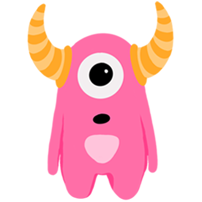

<!DOCTYPE html>
<html>
  <head>
    <title>My experiment</title>
    <script src="jspsych-7.0/dist/jspsych.js"></script>
    <script src="jspsych-7.0/dist/plugin-survey-text.js"></script>
    <script src="jspsych-7.0/dist/plugin-html-button-response.js"></script>
    <script src="jspsych-7.0/dist/plugin-html-keyboard-response.js"></script>
    <script src="jspsych-7.0/dist/plugin-video-button-response.js"></script>
    <script src="jspsych-7.0/dist/plugin-preload.js"></script>
    <script src="jspsych-7.0/dist/plugin-audio-button-response.js"></script>
    <link href="jspsych-7.0/dist/jspsych.css" rel="stylesheet" type="text/css" />
  </head>
  <body></body>
  <script>
  const jsPsych = initJsPsych();

  var participant_info = {
    type: jsPsychSurveyText,
    questions: [
      {prompt: "Participant name", name: "participant_name"},
      {prompt: "Participant ID", name: "participant_ID"}
    ]
  }


  var preload = {
      type: jsPsychPreload,
      auto_preload: true,
      max_load_time: 10000
  }

  var m = {
      timeline: [
          {
              type: jsPsychHtmlButtonResponse,
              stimulus: '</img>',
              choices: [
                          jsPsych.timelineVariable('choiceA'),
                          jsPsych.timelineVariable('choiceB'),
                          jsPsych.timelineVariable('choiceC'),
                          jsPsych.timelineVariable('choiceD')
                        ],
              button_html: '',
              save_trial_parameters: {
                choices: true
              },
              on_finish: function(data){
                // Score the keyboard response as correct or incorrect.
                data.correct_response = jsPsych.timelineVariable("correct_response");
                data.correct = data.correct_response.includes(data.response);
                //data.test1 = data.set;
              }
          },
          {
            type: jsPsychVideoButtonResponse,
            stimulus: function(){
              var last_trial_correct = jsPsych.data.get().last(1).values()[0].correct;
              if(last_trial_correct){
                return [
                  'videos/m1- correct.mp4'
                ]; // the parameter value has to be returned from the function
              } else {
                return [
                  'videos/m1-wrong.mp4'
                ]; // the parameter value has to be returned from the function
              }
            },
            choices: ['img/f1a.png', 'img/f1b.png', 'img/f2a.png', 'img/f2b.png'],
            button_html: '',
            response_allowed_while_playing: false
          }
        ],
      timeline_variables: [
          {choiceA: 'img/f1a.png', choiceB: 'img/f1b.png', choiceC: 'img/f2a.png', choiceD: 'img/f2b.png', correct_response: [0,1,2,3]}, //all responses are correct
          {choiceA: 'img/f3a.png', choiceB: 'img/f3b.png', choiceC: 'img/f4a.png', choiceD: 'img/f4b.png', correct_response: [0,1]},//either of the first two choices are correct
          {choiceA: 'img/f3a.png', choiceB: 'img/f3b.png', choiceC: 'img/f4a.png', choiceD: 'img/f4b.png', correct_response: []} //no response is correct
        ],
      repetitions: 1,
      randomize_order: true
    }


  //end message//
  var ending = {
    type: jsPsychHtmlKeyboardResponse,
    stimulus: "<p>Thank you for participating in this game!</p>",
    on_start: function(data){
      var file_name = 'LT_' + '.csv';
      jsPsych.data.get().localSave('csv',file_name); // Saves a file on the computer running the experiment. First localSave argument is the format, second is the filename.
    }
  };

  jsPsych.run([
    preload,
    m,
    //,
    ending
  ]);
  </script>
</html>
